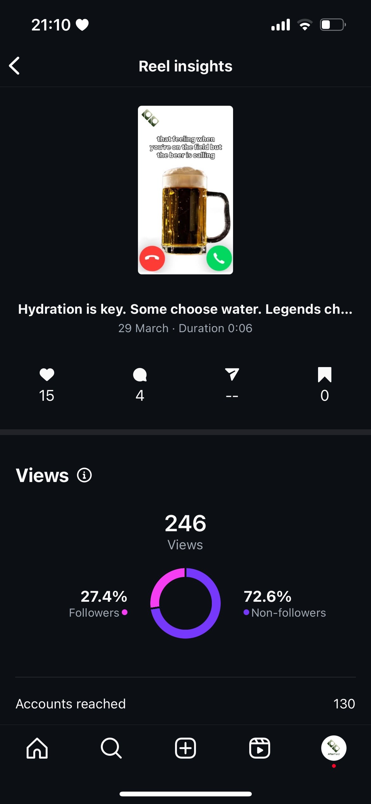
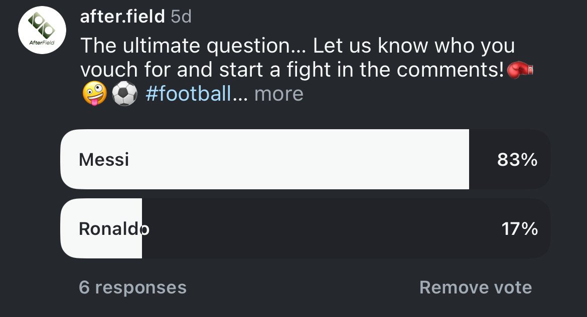

General Information
This branded website is publicly available at https://afterfield.github.io/after-field/
This website was created by:
- Gabija Gembickytė (ID: 233541)
- Alexandra Rujan (ID: 230733)
- Lujza Péczely-Tallai (ID: 230481)
- Leona Brodarić (ID: 230749)
Content
Division of work:
| # | Student Name | Value | Name and link of content |
|---|---|---|---|
| 1. | Gabija Gembickytė | Brand persona and Copywriting | Homepage Copywriting, Brand persona |
| 2. | Alexandra Rujan | Visual identity and Copywriting | Copywriting, Visual identity |
| 3. | Lujza Péczely-Tallai | Values and vision | Values and vision |
| 4. | Leona Brodarić | Mission | Mission |
Brand name:
The name AfterField is a wordplay of “After” and “Field,” capturing our unique value proposition—focusing not only on the football matches themselves, but also on the post-match experiences that bring people together. By emphasizing the word “After,” we playfully highlight the idea that the field is not the only place where real connections are made.
Logo:
Our logo subtly references a football field while maintaining a modern and minimalistic aesthetic, using clean shapes and soft gradients. The two rectangles next to each other symbolize a sense of togetherness and unity, reflecting our community-driven value.
Mission:
In a world where football often gets lost in constant competition and professionalism, we believe in bringing it back to its roots—the social and casual side of the sport. Because football is more than just a game— it's a chance to unwind, have a laugh, and make lasting memories.
Brand persona:

Values:
- Casual
- Light-hearted
- Passion
- Community
For a detailed description, visit: About us page!
Production
Design Elements
Style guide
Color palette
- #EE7622- Dark green is often associated with stability, growth, and strength. It has a grounding effect and can symbolize endurance, which is fitting for a sport like football where resilience and toughness are key attributes.
- #AAAE7F- This shade of green complements neutral tones and is easy on the eyes. It can bring a sense of balance to the palette while ensuring the look does not feel too harsh or overwhelming. It helps to balance out the deeper tones of green, preventing the design from feeling too intense or heavy- reflecting our brand values of light-heartedness and casualness.
- #D0D6B3- To truly stick to the universal and main colour of our brand, another lighter shade of green was added.
- #F7F7F7- Off-white shades evoke feelings of cleanliness, simplicity, and freshness. It is a color that feels light and airy, making it ideal for backgrounds or creating a neutral foundation in design.
- #FFDE21- Bright yellow breaks the constant repetition of the color green while highlighting the important information and/or content. It conveys a sense of energy, optimism, and enthusiasm. In the context of a football match, it can evoke excitement, and high energy—perfect for a sporting event.
Overall, we went for the colors resembling football pitch (shades of green and a neutral white), to keep consistency with our brand name, AfterField, and to create a positive, cohesive association for our target audience. Yellow was added as a standout color in the design to break the dominant green in the palette and to symbolise the fun, energetic nature of the sport.
During user testing, our target audience immediately recognized who the brand was intended for based on the design alone, confirming a strong alignment between our visual style and target audience.
Font choices
Since our target audience is specifically male football players, we have chosen fonts that had a sleek and simlple look. We try to communicate the casual value of our brand in the simplicity of its design.
- Coolvetica
- This font was used for the website headings, chosen for its high legibility, clean appearance, and masculine feel. Its rounded forms and tight spacing give it a confident and youthful tone, while the bold weight adds a sense of credibility.
- Parabolica
- The font was selected for its simplicity, readability, and casual tone, making it a perfect fit for our brand- resonating with a community-oriented, easy-going audience. The font family offers a wide range of weights and styles, including italics and various bold options, allowing for design flexibility while maintaining visual coherence.
User interface patterns (e.g. grids, carousels, menu organizations etc.)
Grid: The layout is built on a flexible 12-column grid, providing a strong foundation for a responsive and balanced design. Most of our sections utilize a single column for a clean, focused presentation of content, allowing for maximum visibility and emphasis. Some of our sections, including images and text, we expand to two columns, creating a balanced, side-by-side layout that enables complementary content. Finally, the third section utilizes a three-column layout (featured only at the beginning of the homepage to communicate “What we are all about”), optimizing space while ensuring clear separation between elements. Since this section is one of the first things users encounter when visiting the landing page, this grid structure is somewhat dynamic, designed to capture attention and spark curiosity.
Navigation bar: We simplified our navigation bar to include as less information as possible. With a simple and clean design, the user is able to find information quickly as it is uncluttered and there is a big black-white contrast between its background and text colour. To highlight our brand's core function—organizing football matches—we included a prominent “Check all the events” button on the right side of the navigation bar.
Carousel: On the landing page, we implemented a scrollable carousel featuring images of football players enjoying themselves and having fun. Concerning hierarchy of content, this element was chosen to be important enough to visually communicate our brand's core value of community. The carousel format allowed us to showcase multiple moments without overwhelming the screen space, maintaining a clean and engaging design.
Cards: Cards are used to add visual interest and stand out within the simplistic design, bringing a touch of vibrancy and playfulness to our website. On the 'About Us' page, cards help emphasize our key brand values, while on the Events page, they display all available football matches. By using cards for event displays, we ensure that the information is easy to digest and visually appealing, providing a clear, engaging layout for users. The rounded corners of the cards avoid rigid, sharp feeling and create a casual, light-hearted atmosphere, reinforcing our brand's tone.
Search bar: We implemented a search bar feature to make football match searching more accessible and tailored to the customer's need. By entering a city location in the Netherlands, users can easily discover events happening in their area.
Filter button: We also integrated a filter feature to enhance the search experience, allowing users to narrow down football match results based on specific criteria such as date and event type. This empowers users to find the most relevant matches quickly and efficiently, ensuring a more personalized and streamlined experience.
Text boxes: As a brand that requires users to sign up through our website, it is crucial to ensure that we collect all relevant contact and user information seamlessly. This is where text boxes play a vital role. They are designed to make the process of entering data easy, clear, and efficient during sign-up for an event.
Overlays: To maintain a clean and uncluttered visual experience, we incorporated overlays to present information in a more focused and engaging way. One of the overlays features a playful interactive question, allowing team members to choose whether they want their name displayed on a digital field when signing up for an event—adding a personal and fun touch. The second overlay appears during the payment confirmation process, reassuring users that their registration fee has been successfully processed and their spot on the field is secured.
Buttons: Buttons are a crucial element in any UI/UX experience. We ensured that each button stands out by using bold colours like yellow or dark green, drawing attention to key actions and enhancing the overall visual hierarchy of the pages.
The structure of the navigation and content (e.g. how content units are distributed across pages)
Staying true to our design principles of simplicity and practicality, we deliberately avoided overcrowding the navigation bar. This helps reduce screen overload and ensures a clean, user-friendly browsing experience. Even so, there are multiple ways to access different pages with help of various buttons and navigation bar, which encourages our users to feel in power and confident when going through our website. The content throughout the site is straightforward and direct—reflecting the preferences of our target audience, who value clarity with no unnecessary distractions.
We structured the website so that each page serves a distinct and intentional purpose. The landing page is designed to briefly introduce AfterField and highlight its core feature—searching for football matches by featuring a prominent search bar in the middle of the header with a logo and a message/slogan of our marketing and communication plan, „All is casual.“. When scrolled, the homepage also features a carousel displaying images from past matches, reinforcing our brand's key value of community and passion in a dynamic and engaging way. Lastly, the page displays partnerships and collaborators to boost brand's credibility, FAQ for any additional questions and a footer in which our contact, newsletter and socials are shown.
The About us page gives users insight into our brand story, values, and mission. The page's primary goal is to clearly position AfterField in the minds of our audience and communicate what we stand for. The Events page lists all current and upcoming matches, organized in chunked event cards, each representing an individual event. When users click on an event card's button, they are directed to a Sign up page page, where they can enter their credentials, read a full event description, and access all relevant information needed to participate. After completing their registration, users are directed to a Payment page where they can enter their payment details. Upon successful submission, an overlay appears to confirm their payment and secure their spot, providing clear feedback on their sign-up status.
Credits
Template credits
This website was built based on the template of buas-media-interactive/prj4-group-template
Other source codes where taken from getbootstrap.com/docs
Image credits
- Events Hero picture - William Smith on Unsplash
- Events card 1 - Ruben Leija on Unsplash
- Events card 2 - phillipkofler on Pixabay
- Events card 3 - planet_fox on Pixabay
- Events card 4 - Fancy Crave on Unsplash
- Events card 5 - David Clarke on Unsplash
- Sign-up Hero picture - Terrace Grain on Unsplash
- Breda field picture - Patrick Konior on Unsplash
- About us- 'Free men playing a soccer game on field image, public domain sport CC0 photo' taken from Rawpixel
- About us- 'Free public domain CC0 photo' taken from Rawpixel
- About us- 'Free men playing a soccer game on field image, public domain sport CC0 photo' taken from Rawpixel
- Home page- Franco Monslavo on Pexels
- Home page- Madknoxx Deluxe on Pexels
- Home page- Omar Ramadan on Pexels
- Home page- Tom Fisk on Pexels
- Home page- Icons taken from Bootstrap gallery
Testing Report
Testing goals
The goal of this user testing is to evaluate the effectiveness, clarity, and usability of the AfterField website for first-time users within our target demographic. Specifically, we aim to assess:
- Initial brand perception: How well the landing page communicates the core concept and target audience of AfterField before any explanation is given.
- Usability and navigation: How intuitively participants can explore the site, locate key features (e.g. events, sign-up options, brand info), and complete relevant tasks.
- Overall user experience: Participants' impressions of the site's design, structure, and how well it aligns with the AfterField brand identity.
- Areas for improvement: Identification of any points of confusion, missing information, or opportunities to enhance clarity, functionality, and engagement.
Testing protocol
| Participants | Age | Gender | |
|---|---|---|---|
| 1. | Marek Tomco | 22 | Male |
| 2. | Omer Taha | 29 | Male |
| 3. | Afro Kumbakumba | 27 | Male |
| 4. | Antonio Rodriguez | 22 | Male |
Participants
The testing protocol will include four individuals who fall within the demographic of our intended target audience. Specifically, these participants will be males between the ages of 22 and 30 who identify as casual football players—that is, individuals who play the sport recreationally rather than professionally. While ethnicity and nationality are not determining factors in the selection process, it is important to stress that all participants currently reside in the Netherlands, ensuring a shared cultural and geographic context for the testing.
Setting
All of the testing interviews will be done in the university setting within a classroom to ensure a structured and controlled space for testing without interruptions. All user testing sessions will be carried out in person, as this format enables the most effective observation of how participants navigate and engage with the interface or our website.
Recording and proof
All of the sessions will be recorded via OBS program through screen capture. This approach will allow us to look back at the exact path taken by each participant, providing deeper insights and feedback. In addition to screen recording, we will capture participants' facial expressions and non-verbal cues using the laptop's built-in camera. This allows for a simultaneous capture of screen activity and participant reactions.
The recordings are available at the following OneDrive link: User testing recordings
Testing questions
First impression questions (before brand introduction):
- What do you think this website is about?
- Who do you think this website is for?
Introducing the brand: “AfterField brings together casual amateur players by organizing matches across the Netherlands. The goal is to create an enjoyable football experience while fostering social interaction. After each game, the players will have the opportunity to enjoy after match activities like free beer round after winning the match.”
Website navigation questions:
- Let's say you wanted to check out Afterfield's events, how would you do it? (2 ways)
- If you wanted to see more information about the brand, where would you go? (2 ways)
- How would you search for an event in a specific city? What about a specific date?
- If you wanted to search specifically for individual events, what would you do?
- Let's say you wanted to sign up for the Afterfield event in Breda, how would you do it?
- Can you sign up for the event in Breda again, but this time as a team?
- How would you return to the homepage?
- If you wanted to subscribe to our newsletter, where would you look?
Post testing questions:
- What did you think of the overall experience?
- Was it hard to get by?
- Do you think there's some parts of information that are missing?
- Does the design match the brand?
- Any advice?
Testing findings
The users were overall happy with how they managed to navigate. For them, the website was intuitive and easy to use. Furthermore, despite the positive feedback on the design match between our TA and visual identity, several usability and design issues were identified during testing.
These have been ranked by priority:
- Responsive layout on the Events page- When testing screen formats, it was found that the Events page has to implement a responsive layout. Specifically, the event cards are not displaying correctly on mobile devices. Improvements are needed to ensure the layout adapts seamlessly to smaller screens.
- Event Attendance Transparency- Nearly all participants mentioned the lack of visibility regarding attendance for upcoming matches. Users expressed a strong need to see how many spots were available and how many were already filled for each AfterField event. This data should be clearly displayed on the Events and Sign-Up pages to help manage expectations and encourage participation.
- Terminology for Event Registration- Some users found the labels “Individual Events” and “Team Events” unclear. There was confusion around what action each button initiated. A recommended improvement is to rephrase these options as “Sign up as an Individual” and “Sign up as a Team” to better communicate the functionality and reduce cognitive load.
- Payment Information Visibility- Users wanted access to payment-related information prior to the sign-up process. Displaying pricing or payment details earlier in the user journey (e.g., on the Events overview or event detail pages).
- Event Location Accessibility- The address of the event is currently only visible during the sign-up stage, which users found inconvenient. The event's exact address and date should be prominently displayed on the Events and at the top of the Sign-Up pages.
- Unnecessary Dropdown Functionality- Participants noted that when event types are filtered in the search bar, the dropdown selection for “Individual” or “Team” during sign-up becomes redundant. This may lead to confusion and should either be removed or updated dynamically based on prior user filters.
- Missing “Contact Us” CTA- One participant highlighted the absence of a “Contact Us” button or section in the footer. Including a clear contact pathway is essential for addressing user inquiries and improving support accessibility.
- Lack of Calendar Filter on Homepage- A calendar-based filter is available on the Events page but missing from the Home page. Users suggested adding a similar date-filtering functionality to the Home page to streamline event discovery.
- Inconsistent Name Branding - There is inconsistency in the brand name presentation across the site—appearing both as “AfterField” and “After Field.” Ensuring consistency in naming is crucial for brand recognition and design coherence.
- The size of the navigation bar- One participant mentioned that the navigation bar appears overly thick, with too much white space. A more compact navigation bar would contribute to a cleaner, more balanced layout and better use of screen space.
- Lack of Visual Elements- The Home and About Us pages were described as lacking in visuals. Users wanted to see more imagery that reflects the AfterField community, such as photographs, illustrations, or icons.
Improvements made:
Due to time contraint we managed to implement the most crucial and important changes:
- Responsive layout implemented on the Events page for better mobile display.
- Event attendance info added to Event's cards.
- Payment expectations now visible when clicking on a specific event (under i icon).
- Dropdown menu for "Individual" and "Team" events changed into a simple tagline.
- “Contact Us” button added to the footer.
- Navigation bar made more compact to reduce white space.
- Visual content (photos) added to Home and About Us pages.
The rest were simply minor things that we chose to ignore for now due to time constraints.
Marketing
Context of campaign and promotional activities
AfterField is a brand that connects amateur football players through casual matches, with a strong focus on the social side of the game. Beyond the pitch, AfterField organizes post-match activities, creating a space for players who see football as more than just a sport.
The AfterField main campaign communication objective is all about raising brand awareness amongst amateur football players aged 22-30, living in the Netherlands. As a upcoming brand, it is the first, yet important step to take! The core message of the campaign is captured in the line:“All is casual. No pressure, just passion.”
It reflects a light-hearted, relatable tone that speaks directly to footballers who play for the love of the game — not fame, contracts, or trophies. The campaign embraces the casual side of football culture, celebrating everything that happens after the match: the banter, the beer sessions, the shared routines. It positions AfterField as a lifestyle that fits naturally into the rhythm of amateur players.
Social media choices:
The promotional activities for the AfterField campaign focused heavily on social media efforts, specifically Instagram and YouTube. Each piece of content was synchronized across both platforms to ensure consistent messaging and maximize visibility.
Upon interviewing our target audience, we found that they mostly use YouTube and Instagram when enagaging with football content online. Their short attention spans and limited free time make short-form, scrollable content ideal for reaching and engaging them. Using platforms they already use frequently ensures the message is seen naturally in their daily routines. They regularly engage with football-related content like match highlights, news, and memes — often while on the go (e.g., commuting, during breaks, or at night). The campaign's relaxed, humorous tone reflects how they experience football: not as a profession, but as a fun, social part of life.
OBJECTIVES
Reach:
- Reach 1.5K views on YouTube shorts in the span of 4 weeks from launching our social media campaign (deadline: April 16th).
Explanation: Measuring reach allows us to track whether our target audience is being exposed to the AfterField brand and its message. While reach alone doesn't guarantee deep engagement, it's a crucial first step in building awareness among amateur football players in the Netherlands. Our goal of reaching 1.5K views on YouTube Shorts within four weeks ensures that the content is getting visibility on a platform our audience already uses regularly.
Affect:
- Gain at least 10 responses on every poll posted on both Instagram and YouTube campaign in a span of 4 weeks from the start of the campaign (deadline: April 16th)
Explanation: The goal of achieving at least 10 responses per poll — although modest — gives us a way to measure active participation. This type of interaction reflects whether our message is truly resonating. If users are willing to take a moment to vote, it shows we're creating content that feels relevant and relatable. Poll responses show they care enough to engage and share opinions. Even a simple vote is an emotional "Yes, I relate to this." This interaction builds emotional connection and community — which are core to AfterField's casual and inclusive identity. Over time, they also validate our tone and brand voice as relatable and light-hearted.
Response:
- 500 Instagram profile visits in four weeks from the start of our Instagram campaign (deadline: April 16th).
Explanation: The objective of 500 Instagram profile visits takes it a step further — it's not just about being seen, but about sparking curiosity. A profile visit indicates a user is interested enough to learn more about who we are and what AfterField stands for. It's an early indicator of potential brand affinity and future engagement.
How to communicate the message in the social media campaign?
The AfterField campaign was structured around three key content stages to effectively communicate the brand's message and engage the target audience:
- Funny Content
- Brand Representation
- Instructional Content
We kicked off the campaign by sharing trending, football-related memes that tapped into the humor and everyday experiences of amateur players. This content was designed to be instantly relatable — from jokes about match preferences to team banter and football opinions. This helped build an initial connection with the audience and establish a playful, light-hearted tone that aligns with AfterField's identity.
Once familiarity and engagement were established, we began introducing content that showcased the AfterField brand itself — including visuals of our logo, colours, and football-inspired imagery. This content portrayed AfterField as more than just a brand — but as a reflection of the culture and rhythm of amateur footballers. The posts emphasized the casual, off-pitch lifestyle, using quick ad-montage of people playing in the field, post match beer sessions, and attending football matches.
To deepen engagement and drive real-world participation, we introduced instructional content focused on our first AfterField event. This included an informative post that walked followers through what the event was about, how to join, and what to expect .
For detailed information on our posts, you can take a look at our social media planning: Social Media Planning document
Professionalism
To have a better look at our posts, you are welcome to check out our socials: Instagram and YouTube
We launched our social media campaign on the 15th of March, when the official YouTube and Instagram accounts were made.
Instagram account:
YouTube account:
Our first post was a teaser video. We hoped to spark curiousity amongst both platforms, YouTube and Instagram:
The views on Yotube were measured to be 589, while Instagram with less, approx. 192 views. Regarding the first post, YouTube was outperforming Instagram.
Next posts focused on the content strategy of funny, relatable and trending content. Each post varied in terms of success, but few managed to spike in views and likes. However, this stage was debatably outperforming the other content stages, especially on Instagram. Most liked reel on Instagram:
The rest:
To kick off the next stage of our content strategy, we started to focus on introducing the brand image. The posts introduced the brand with a catchy slogan, „All is casual.“, and communicated the message of AfterField being all about passion without pressure.
When looking at their views and reach, they were underperforming the other light-hearted and humorous posts.
The purpose of the instructional content was to reduce confusion and redirect our target audience to our events and website. Furthermore, we posted an announcement for the first AfterField event in a shape of a static post.
The final stage of the content strategy plan was to include polls, measuring the engagement with our brand. We wanted to keep our posts relatable to our target audience to boost their reactions.
The most successful poll was posted on YouTube, receiving just 2.0K views, with 130 responses.
Learning Points
Did we reach our objectives?
- Objective 1: Reach 1.5K views on YouTube shorts in the span of 4 weeks from launching our social media campaign (April 16th).
Results: We were pleasantly surprised to not only meet, but exceed this objective. Our YouTube Shorts collectively gained 3,119 views, doubling our initial goal and signaling strong reach in our video content.
- Objective 2: Reach at least 10 responses on every poll posted on both Instagram and YouTube campaign in a span of 4 weeks from the start of the campaign (April 16th)
Results: While we made progress in engaging our audience, this goal was not fully met. On average, our polls received 6 responses per post, indicating a need to improve how we drive participation and create content that resonates more deeply with our audience.
- Objective 3: Gain 500 Instagram profile visits in four weeks from the start of our Instagram campaign (April 16th).
Results: This was our most ambitious goal, aimed at measuring curiosity and deeper engagement with the brand. While we didn't hit the 500-visit target, we achieved an average of 142 profile visits, suggesting moderate traction and providing a solid foundation for future growth.
What went well?
Overall, we were pleased to announce that at least one of our objectives was fulfilled. Some of our posts did quite well in terms of reach, therefore raising brand awareness (the goal) and implementing our brand image into our audiences' minds.
The most viewed video on Instagram, a humorous, trend-based football clip, achieved 1.5K views and 39 likes. Furthermore, the most viewed video on YouTube received 2K views and 13 likes. Short videos garnered more attention than simple, static posts, as expected. The video content had much more reach and views than static posts, reaffriming our belief that the best way to approach our target audience is though dynamic audio and visuals.
Overall, Instagram Reels outperformed YouTube Shorts in terms of engagement. This suggests Instagram may be better for community-building, while YouTube is more effective for broad exposure.
We also found that using trending sounds, challenges, and memes boosted performance, particularly on YouTube Shorts, where algorithm-based reach is more dynamic.
What went unexpected?
Most of our conent focused on trending relatable football content, but little was done to encourage a call to action from our users (reflecting the two unmet objectives). For example, Instagram profile visits were below target in the first two weeks, indicating that posting memes alone wasn't enough — stronger calls to action and content that encouraged more clicks were needed. To add onto that, poll engagement was expected to be greater than it turned out to be, with the average of 6 responses on each post. This means that the brand needs to establish a more stornger emotional connection with the audience to push them to actively participate in AfterField's marketing efforts.
On YouTube, 38% of our viewers were aged 18-22, while 34.7% were aged 25-34, showing that we reached a younger audience than originally intended (22-29). While 34.7% still represents a significant portion of our viewers, we had anticipated a stronger resonance with the core audience, rather than the younger generation.
The brand representation stage of the content strategy underperformed compared to the trend-driven, humorous videos. This suggests that the messaging may not have been strong or distinctive enough to capture the audience's attention — with viewers engaging more with the entertainment value than with the brand itself.
Furthermore, the campaign focused more on Instagram, which may have contributed to a weaker performance on YouTube. For example, the number of Instagram followers, at 32, was significantly higher than the 6 subscribers on YouTube. However, weaker performance on YouTube cannot be surely attributed to this reason as it may have also been that YouTube was not entirely fit for this campaign.
Lastly, there were pivotal moments for our brand when we questioned the tone of voice we wanted to adopt and whether adjustments to our content strategy were necessary—without compromising our core message. We ended up with minor adjustments to our social media planning document. These shifts made it challenging to stick to the original plan, which is why it's crucial to stay flexible while keeping your core message in focus.
What to do differently?
Looking back on our social media promotional efforts, more frequent posting could have improved the engagement results, as it's not just about good content, but also about maintaining consistent presence. Additionally, distributing posts evenly across both platforms helps ensure that performance data can be analyzed more accurately and without any biases. Next, during our campaign, we were mostly focusing on posting at late evenings and afternoons. Even though the posting time proved to be somewhat successful, we could've experimented with a broader range of posting times which might have provided more valuable insights into how timing affects reach and engagement.
Future Planning
Based on the outcomes and learnings from our initial campaign, it's clear that while we successfully began building brand awareness, there's still significant opportunity to deepen audience engagement and strengthen brand association. If the campaign were to continue, we would focus on enhancing both the consistency and intentionality of our content strategy.
Future recommendations:
- Moving forward, we could refine our messaging and content strategy to better resonate with the older segment of our target group (25-30), ensuring our campaign aligns more closely with the intended audience. Conducting a more in-depth survey on how our target audience engages with football content online could provide valuable insights to inform and improve our future social media marketing strategy.
- We could amplify our reach by expanding to a platform fit for the brand's light-hearted and casual image like „TikTok“. There are many opportunities to advertise on the said platform as our TA also regularly utilizes TikTok.
- One important step to be taken is to increase Instagram engagement and profile visits by incorporating clear call-to-action prompts in every reel and post. Specifically, including direct instructions such as 'Visit our bio to join a match' or 'Tap to learn more about our next event'.
- Beyond memes and reels, we'd need to expand the range of content formats to deepen engagement and build trust, such as sharing short clips from the actual AfterField events and user testimonials to build authenticity.
- Latly, we could experiment with posting at different times to see how the timing affects engagement.
Process moving forward:
After dedicating the initial campaign phase to building brand awareness, the logical next step is to shift our strategic focus toward deepening engagement and fostering stronger audience interaction. To support this shift, we would need to set new, engagement-focused objectives. These objectives include metrics such as:
- Increased poll response rates (15+ responses per poll)
- Measuring comment activity and prompting discussions on posts and Reels (10+ comments)
- Measuring follower rate on Instagram and YouTube. (40+ followers)
- Number of user-generated posts (e.g., people tagging @AfterField or sharing matchday experiences)
In short, the next campaign wave should emphasize community-building, trust, and interaction, leveraging the initial awareness we’ve generated to start creating a loyal base of engaged amateur footballers who see AfterField as part of their lifestyle — both on and off the pitch.
Management
Lean Canvas
Problem
All of these pain points were found based on the problem interviews conducted at the beginning of the project.
You can check the interviews on the following link: Problem interviews
- Time management problems- Our target audience (amateur male footballers aged 22-29 in the Netherlands) struggle to balance football with work, studies, and life, preventing them from pursuing the sport professionally despite strong passion.
- Lack of casual players for informal games/tournaments- Interviewees reported difficulty finding casual players or games. International residents especially struggle with knowing where to look for informal football opportunities.
- High costs and private coaching make elite-level football less accessible- The financial burden of private coaching and football-related expenses makes it hard for amateurs to access elite-level training, often clashing with their economic reality.
Solution
- Organizing recreational local football maches- To solve the problem of the gap between our audience's passion and their comittment level, we organize casual local football matches. By offering informal yet structured games, we provide a platform for players to showcase their skills, stay engaged with the sport, and maintain their passion—despite their busy lives.
- Having after-match activities to attend to- To build community and enhance engagement, we host social events after matches (e.g. drinks, food, or casual hangouts). For many amateur players, football-centered social interaction is a core part of their connection to the sport. By creating opportunities to bond before and after matches, we're not only solving the problem of limited play opportunities but also nurturing the community aspect that fuels their passion in the first place.
- Low-cost solution for our audience- Our model is designed to be low-cost, tackling the financial barrier to participation. With no need for expensive coaching or long-term commitments, players can stay active and improve through regular, fun games—making football more accessible for all.
EXISTING SOLUTION: FOOTY- The company Footy operating in the Netherlands has a similar business model to AfterField's. They are „a small-field football competition for companies and friends in the Netherlands. Their mission is to make football possible in an informal setting, which promotes team spirit between colleagues or friends. This service combines sports with a social activity, which improves unity and work-life balance.“ (Footy, 2025)
Customer segments
- Amateur male football players, aged 22-29, residing in the Netherlands.
This audience sees football as more than just a sport—it's a way to connect socially, making the experience all the more enjoyable. While they are deeply passionate about football, their ability to fully commit is limited due to the demands of studies and early career development. As a result, they seek low-cost, low-commitment options when it comes to their purchasing behavior.
In addition to occasionally playing football, they actively engage with the sport in various ways: watching professional matches, attending games, analyzing match statistics, and interacting with football-related content on social media. They consume highlights from major championships, stay updated on football club news and player updates, and enjoy football-themed memes and discussions.
Unique value proposition
Our unique value proposition is best reflected in our slogan:
- „No pressure, just passion. All is Casual.“
- We make sure that the trait of being a football player also resides in the community feeling. We put emphasis on ťhe casuality by providing our audience, not only with football matches, but also after-match activities to bond over.
Unfair advantage
- Partnerships and sponsors: AfterField's successful networking boosts financial performance. In addition, we collaborate with a diverse range of sponsors—such as popular beer brands—to reinforce the community-driven spirit of our brand. These strategic partnerships also enable us to host engaging and memorable post-match events that add lasting value to the overall experience.
- Investing in activities: Post-match activities are a core element of our service offering. What sets us apart from competitors is our commitment to creating not just football matches, but unforgettable social experiences. By going beyond the game, we foster a vibrant community atmosphere that keeps participants coming back.
- Low-cost: Our brand is recognized by our target audience as affordable and accessible. The only cost involved is a general match fee, making our service highly cost-effective and easy to use. This affordability ensures that more people can participate, reinforcing our mission of inclusivity and fun.
Channels
- YouTube Shorts: As previously mentioned, we reach our target audience through YouTube, as many of our respondents actively engage with football-related content on the platform. This approach allows us to expand our reach quickly and efficiently attract potential customers, while also leveraging automated data analytics to evaluate campaign performance.
- Instagram: We use Instagram Reels to share quick, engaging football highlights and event promos that resonate with our audience and boost visibility. Interactive features like polls help us gather feedback, spark engagement, and build a stronger community.
- Word-of-mouth: A big aspect of our reach is also influenced by recommedations from our users' friends.
Key metrics
- Website visits: To measure our success, we will primarily track website visits as our key performance metric. This will allow us to assess how effective our campaign was in attracting potential customers and evaluate the impact of our call-to-action efforts across social media platforms.
- Sign-ups to the events: Sign-ups for our events will be a crucial metric in evaluating the viability of our concept. As our revenue largely depends on participant numbers, tracking registrations allows us to assess both market interest and the sustainability of our business model.
- Engagements on social media: Our marketing efforts on social media will be assessed based on profile visits on Instagram, engagement on poll posts and reach of our posts on YouTube shorts. These metrics provide a clear picture of how well we're connecting with our audience, driving brand awareness and reaching our marketing objectives.
Revenue streams
- When conducting solution interviews, our target audience stated that they would be willing to pay a fee of €10-12 for the individual registration for attending the AfterField football matches.
- AfterField also organizes after match activities such as collective beer drinking in bars/stands which brings about another stream of revenue from purchasing the drinks. The company utilizes partnerships with local businessess and food vendors to boost our revenue and get support for this campaign.
- With additional sponsors from beer brands we hope to generate more income.
- Therefore, the main stream of revenue is Player Registration Fees: €10 per player per event. Assuming 11 players per team, 2 teams per event = €220/event, 8 events/month = €1,760/month.
- 50 beers sold per event x €3 (price of the beer) = approx. €150 per event, 8 events/month = €1,200/month
Cost structure
- Fixed: Some necessities like permits, insurance, equipment maintanence (football balls and overshirts) costs stand as fixed costs of the company. Marketing efforts will not vary.
- Variable: Field rentals vary depending on how many matches will be held during the montht/year. The average football field rental price for a 2-hour match is €85. (Gantner, n.d.).
- €85 per 8 events/month => €680 per month for field rentals.
- Beer costs depend on what the demand for the beer is. Due to our beer brand sponsorships, we purchase the beers at a discount for only €1 per can of a beer. If we were to purchase 50 beers per event with 8 events/month; that would result in a total cost of €400. We also take into account staffing/freelancers and sometimes volunteers who get paid to perform certain tasks at the day of the event (judge, photographer, etc.)
- As a brand that emphasizes post-match experiences, it's essential that AfterField delivers engaging rewards that enhance player satisfaction and encourage ongoing participation. For example, when a team wins a match, we commit to providing a complimentary round of beer or another form of a prize. While this adds value to the player experience and strengthens our community, it does represent a cost without direct revenue return. These post-match rewards—such as free food, or drinks—typically range between €30-€50 per event, amounting to €240 monthly across 8 events.
Monthly income statement forecast:
Yearly income and cost per unit:
Services/products
- Football matches: We organize flexible casual football matches for amateur football players to attend to for a small fee.
- Post-match activities: Social gatherings after the matches where numerous prizes are included with fun activities.
Our main service is flexible, low-pressure football matches tailored for amateur players who want to enjoy the game without the intensity of traditional leagues. What makes us additionally stand out is what happens after the game: post-match social gatherings with fun activities and prizes.
This unique combination of casual play and community bonding supports our core message — “No pressure, just passion. All is Casual.” We don't just offer football; we offer a lifestyle where the love for the game meets connection, inclusivity, and fun.
The casual, flexible nature of our matches reflects our laid-back, community-driven brand image, while our post-match activities reinforce the idea that football is more than just a game — it's a social experience. Everything from our slogan, to our event structure and tone of communication is designed to make players feel welcome, relaxed, and genuinely connected. We're not just building a platform — we're shaping a culture of casual football that's fun, social, and open to everyone.
Validation of Assumptions
Assumption 1:
- The target audience doesn't have time to professionally commit to playing football, even though they share an immense passion for it.
Validation: Through problem interviews, we confirmed that many individuals share a strong love for football, but they face time management issues and gear of the pressure of professional football. Our solution addresses this gap by offering casual, flexible matches with no long-term commitment, allowing amateur players to enjoy the sport on their own terms without the stress of rigid schedules or professional expectations.
Assumption 2:
- The target audience values the social experience after the match just as much as the game itself.
Validation: Through problem interviews, we found that many participants not only enjoy the game but also look forward to socializing with teammates and other players afterward. They have Whatsapp groupchats and regularly engage with one another. This insight led us to develop our post-match activities, such as social gatherings and prize events, which have been well-received and have fostered a sense of community around the game, further solidifying the social aspect of the experience.
Validation of trademarks
Our logo features two rectangular shapes in green, symbolizing a football that's just outside the lines of the pitch — a visual metaphor for what happens after the game, tying directly into our brand name: AfterField. The two rectangles also represent the idea that football is never a solo experience, emphasizing the community and connection at the heart of our service. The green tones are inspired by the natural colors of a football pitch, reinforcing visual clarity and instant brand recognition.
The name AfterField was intentionally chosen to put emphasis on the social aspect of our offering — the moments after the match where players bond, share stories, and become part of a community. Both the name and logo are integral to our identity!
Problem interview conclusions
After conducting problem interviews we came across these findings which served as as a crucial starting point for our brand:
- Time Management Struggles- Balancing football with school, work, and personal life is a major challenge.
- Financial Barriers- High costs of training, gear, and private coaching make elite-level football less accessible.
- Strong Sense of Community- Football is as much about friendships as it is about competition.
- Football as a Lifestyle- Players engage with football daily, whether through watching matches, reading news, or analyzing tactics.
- Escapism & Stress Relief- Playing football provides a mental break from life's pressures.
From our solution interviews, we gathered valuable insights by testing our Figma prototype (see in Apendix):
- Willingness to Pay: Participants expressed a willingness to pay a small registration fee (around €10) for event access.
- Positive Reception: The overall concept was well-received, with many indicating they would actively use the service.
- Flexible Registration: Users appreciated the flexibility to sign up either as individuals or in groups, allowing them to tailor their participation.
- Additional Features: There was interest in extra benefits, such as match statistics, to enhance the experience.
- Flexible Cancellation: Participants emphasized the importance of having an easy and flexible cancellation process in case of unexpected changes.
Pivotal moments after the interviews
Throughout our development process, we made several key pivots based on user feedback and real-world testing, while also staying committed to our core vision of our service.
- Revenue model: Initially, we planned to offer our service for free. However, after conducting solution interviews, we discovered that users were not only willing to pay a small entrance fee (around €10), but also perceived it as a sign of value and commitment. This shift allowed us to create a more sustainable model without compromising accessibility.
- Skill level distinction: The users identified a need to differentiate between varying skill levels. Some players wanted a more balanced game experience, so we began exploring ways to separate matches by skill (e.g., beginner vs. intermediate), ensuring everyone enjoys the game without pressure.
- Value proposition clarity: While our vision remained the same, we refined our Unique Value Proposition to make it clearer and more relatable for users.
- Target audience: Originally, we focused on the 24-29 age group. However, our early adopters tended to be slightly younger. Recognizing this, we adapted our marketing and event planning to better resonate with an expanded TA (22-29), without losing sight of our broader audience.
- Field Rental Removed: To streamline our business model, we decided to remove the field rental feature. This adjustment allowed us to focus on the core goal of providing casual, flexible football experiences without the complexity of managing field bookings.
Despite these pivots, we chose to persevere because the core demand — casual football with a strong social element — was validated consistently by our testers as a good concept. Our vision remained relevant; we simply refined the way we delivered it.
References
Footy. (2025, January 18). Wat is Footy? - Footy. https://www.footy.nl/wat-is-footy/
Gantner. (n.d.). Webshop Sportbedrijf Rotterdam. Webshop Sportbedrijf Rotterdam. https://verhuur.sportbedrijfrotterdam.nl/